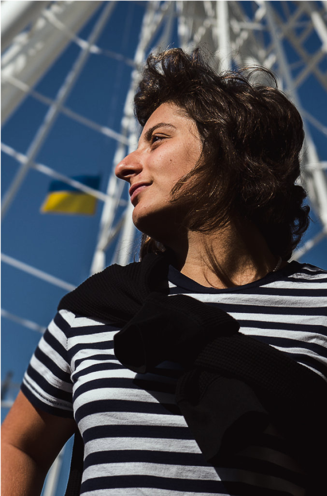
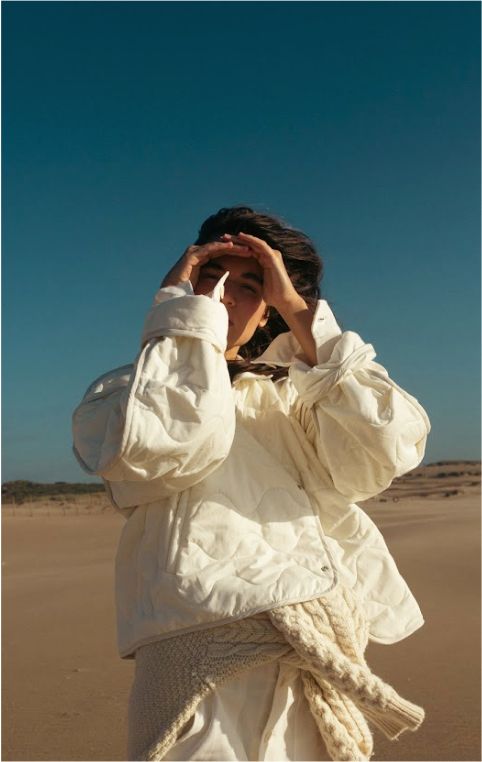
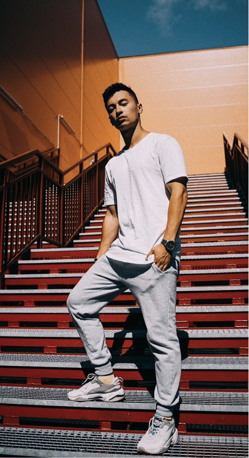
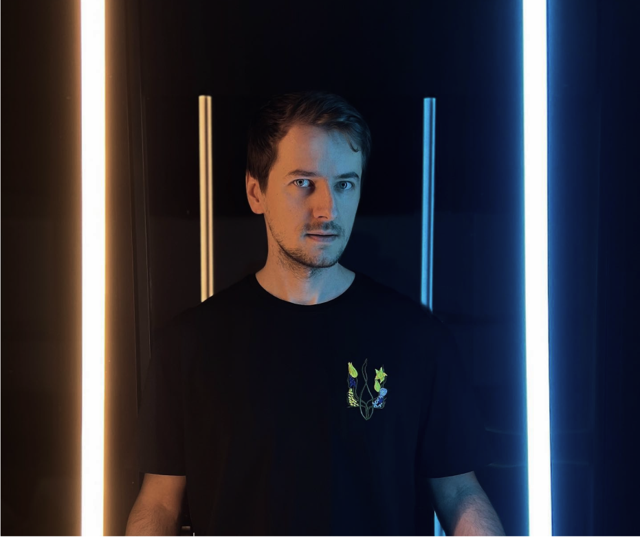
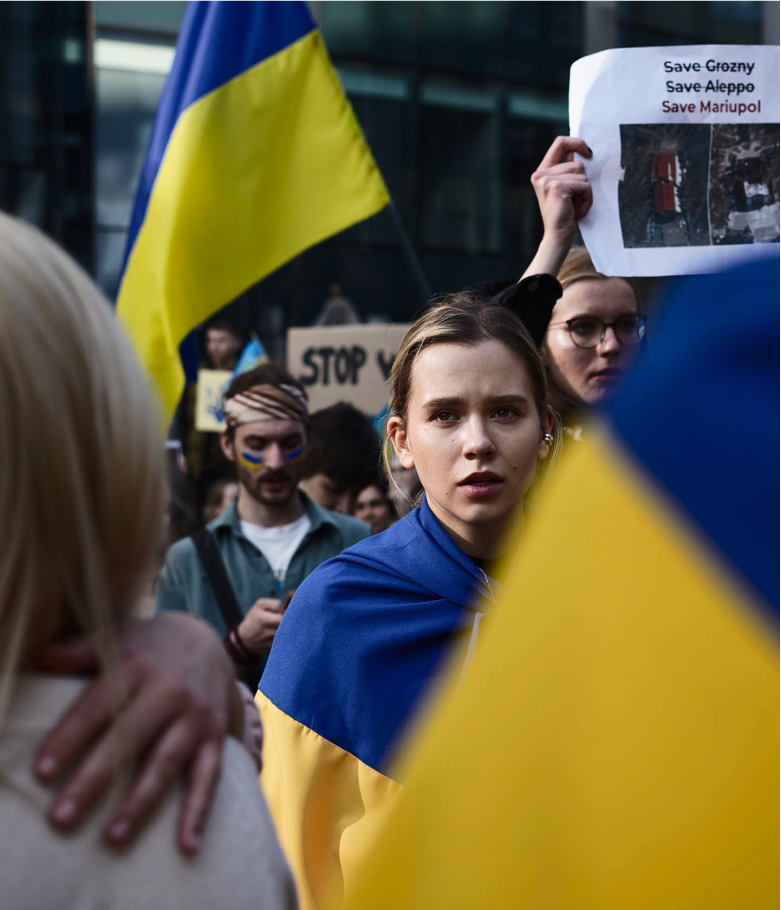
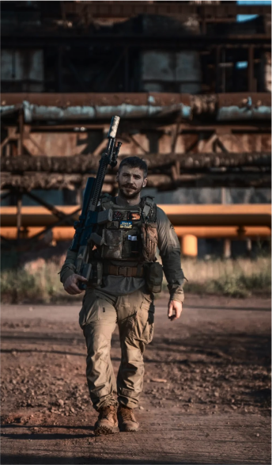
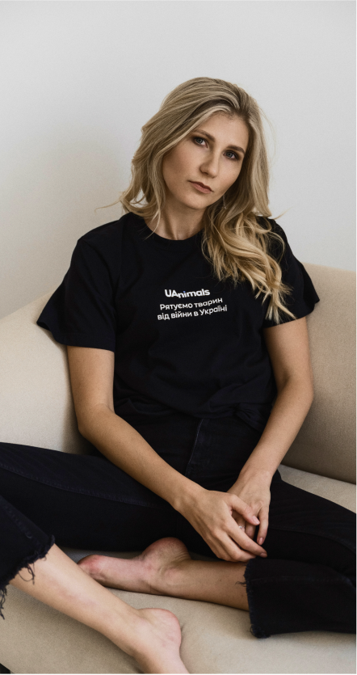
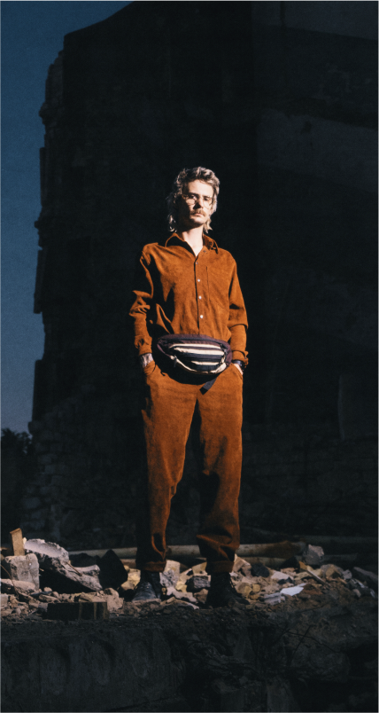
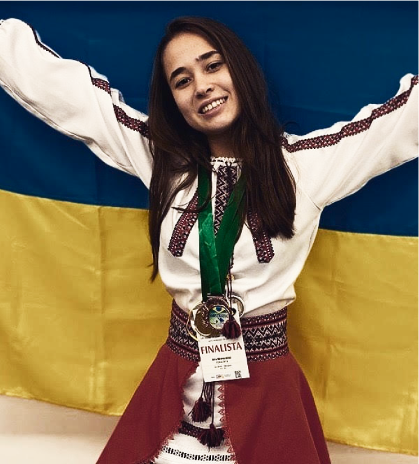
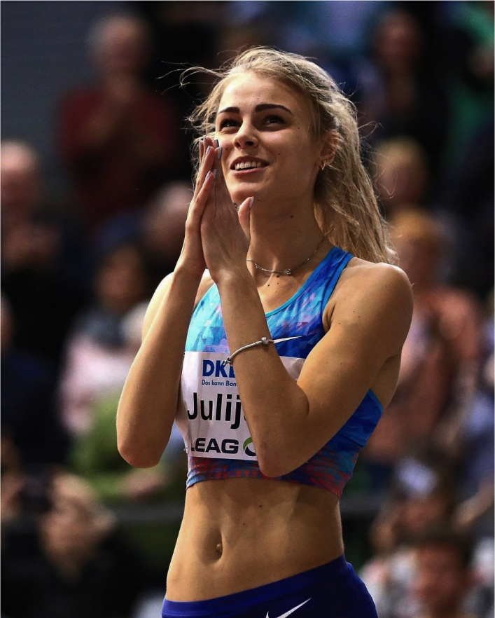

СУЧАСНИЙ ПОРТРЕТ НАЦІЇ
Українська нація має молоде обличчя та героїчне минуле за плечима. Сильні, незламні, вмотивовані, безстрашні та талановиті молоді українці змінюють історію сучасної України.
Яка вона, українська молодь, чим живе, про що мріє, до чого прагне, як ставиться до своєї держави та що думає про майбутнє? Вона волонтерить, запускає проєкти, що підтримують економіку та суспільство, реалізує амбітні ідеї та всім серцем любить Україну. У нашій рубриці ELLE «Сучасний портрет нації» розповідаємо про тих молодих людей, які покращують життя країни сьогодні та вказують правильний напрям руху до майбутнього.
ЯНА ПАНФІЛОВА
Молода українка, яка народилася з ВІЛ, лідерка руху для ВІЛ-позитивних підлітків та засновниця міжнародного громадського руху Teenergizer.
Сьогодні це платформа з групами підтримки, психологічними онлайн-консультаціями та тренінгами щодо ВІЛ, сексуального та психічного здоров’я. Організація розрослась і стала міжнародною — зараз вона працює на чотири країни та десять міст Східної Європи й Центральної Азії. Також Яна виступала на офіційному відкритті наради високого рівня Генасамблеї ООН з питань СНІДу в червні 2021 року в Нью-Йорку. Дівчина представляла 38 мільйонів ВІЛ-позитивних людей у всьому світі.
Інтерв'ю з героїнеюДАША КАЦУРІНА
Талановита українка, мама двох діток, засновниця бренду одягу Katsurina, який сповідує концепт комфортного базового одягу, та співзасновниця київських ресторанів «Китайський привіт», «Японський привіт», «Тайський привіт» та «В’єтнамський привіт».
Заклади самоорганізувалися у перші дні війни та перетворили свій заготівельний цех на волонтерський центр. Працівники «Привітів» також організували формат «Привіт, сусід» для людей похилого віку, доставляючи їм бокси з їжею. Керування ресторанами, дизайнерська справа та батьківство — усе цеДаша вміє успішно поєднувати та не планує зупинятися.
Інтерв'ю з героїнеюАНДРІЙ ЛУЗАН
Продюсер, комік, шоуранер, один із засновників гумористичного YouTube-каналу «Леви на джипі» та благодійного фонду LNJ.
З початку повномасштабного вторгнення Андрій разом з колегами активно допомагає армії та українським захисникам, створює україномовний контент та запускає нові проєкти, аби зробити свій внесок в культуру України. Андрій Лузан вірить у краще майбутнє України та робить усе можливе для того, щоб воно настало якнайшвидше.
Інтерв'ю з героємДМИТРО СІВАК
Дизайнер інтер’єру та власник дизайн-студії Sivak+Partners з Одеси.
Разом з командою професійних дизайнерів він створює та реалізує сміливі проєкти — від багатоповерхівок, офісів на тисячі квадратних метрів до милих кафе зі смачним печивом. Наразі Дмитро продовжує працювати в Україні, створює нові проєкти за кордоном і піднімає питання української самоідентичності у своїх соціальних мережах. Так, з початку повномасштабного вторгнення Дмитро перейшов на українську мову та розповідає своїм підписникам, чому це важливо.
Інтерв'ю з героємКАТЯ МОТРИЧ
Піарниця, телеведуча YouTube-шоу «ЕБАУТ» та інфлюенсерка.
Катерина виросла в багатодітній родині, має активну проукраїнську позицію, працює піарницею і волонтерить. Популярність дівчині принесло YouTube-шоу «ЕБАУТ», у якому вона разом з іншими ведучими обговорює актуальні та важливі соціальні теми.
Інтерв'ю з героїнеюВАЛЕРІЙ МАРКУС
Український військовий, ветеран російсько-української війни, письменник, блогер і мандрівник, головний майстер-сержант 47-го окремого батальйону.
У 2018 році Маркус випустив свою першу художню книгу «Сліди на дорозі», частина подій якої відбувається на Донбасі під час війни. Книга стала бестселером та однією з найпопулярніших книжок в Україні 2019 року. У 2014 році Валерій був нагороджений пам'ятним знаком «За воїнську доблесть». Наразі Валерій служить у ЗСУ та розповідає про війну широкому загалу в соціальних мережах та на публічних платформах.
Інтерв'ю з героємОЛЬГА ЧЕВГАНЮК
Операційна директорка та співзасновниця громадської організації, гуманістичного руху UAnimals, що бореться за порятунок тварин під час війни в Україні.
Після 24 лютого головні зусилля UAnimals зосереджені на порятунку тварин від війни. Представники організації допомагають фінансово притулкам, забезпечують тварин кормом і намагаються евакуювати їх в інші країни або в більш безпечні місця в Україні. З моменту початку війни команда зросла в кілька разів та в ній з’явилося багато нових підрозділів.
Наразі Ольга перебуває в Україні та веде активну діяльність в інших країнах, комунікуючи з волонтерами по всьому світу, представляючи нашу країну на різноманітних подіях та займаючись різними проєктами з міжнародними фондами.
ОЛЕКСАНДР КУЧИНСЬКИЙ
Креативний директор волонтерської ініціативи Repair Together.
Він створює контент для соцмереж та допомагає генерувати стратегічні рішення проєкту. Разом з командою Олександр їздить деокупованими українськими містами та приводить до ладу зруйновані будинки місцевих жителів. Зокрема, волонтери прибирають наслідки руйнувань у Чернігівській області — влаштовують толоки в Ягідному, Лукашівці та Іванівці, а їм допомагають усі охочі.
Нещодавно команда Repair Together організувала рейв-прибирання — розчищала завали під музику діджеїв. Волонтери також анонсували новий етап ініціативи — відтепер вони відновлюватимуть та ремонтуватимуть будинки до початку зими.
ОЛЬГА ХАРАСАХАЛ
Усього 21, проте вона вже стала переможницею престижних міжнародних конкурсів у США, Бразилії та Сінгапурі.
Дослідницький шлях дівчини розпочався у 2014 році — тоді вона волонтерила в Маріупольському онкодиспансері. Ольга розробила власний метод ранньої діагностики раку, який дозволяє контролювати хід лікування хвороби та індивідуально підбирати медпрепарати для пацієнта.
Інтерв'ю з героїнеюЮЛІЯ ЛЕВЧЕНКО
Українська легкоатлетка, яка спеціалізується на стрибках у висоту.
Спортсменка стала чемпіонкою юнацьких Олімпійських ігор, пізніше здобула «срібло» на чемпіонаті світу та двічі перемагала на чемпіонаті Європи серед молоді. Юлія також брала участь в Олімпійських іграх у Токіо.
Інтерв'ю з героїнею